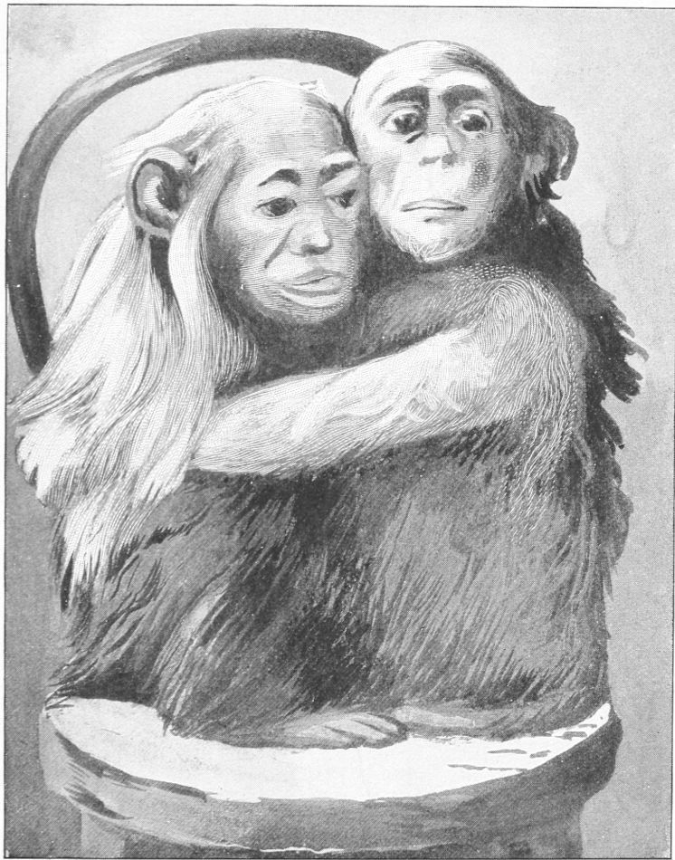

Illness of Elisheba—Aaron’s Care of Her—Her Death—Illness and Death of Aaron
At the end of forty-two long days at sea we arrived at Liverpool. It was near the end of autumn. The weather was cold and foggy. Elisheba was failing in health, as I feared she would do, having come from the warm, humid climate along the equator, and, at the same time, having undergone a change of food.
On arriving at the end of our long and arduous voyage, I secured quarters for the apes and quickly had them stowed away in a warm, sunny cage. Elisheba began to recover from the fatigue and worry of the journey, and for a while was more cheerful than she had been at any time since I had known her. Her appetite returned, the symptoms of fever passed away, and she seemed benefited rather than injured by the voyage. Aaron was in the best of health and had shown no signs of any evil results from the trip.
On reaching the landing-stage in Liverpool, some friends who met us there expressed a desire to see the apes, and for that purpose I opened their cage in the waiting-room. When they beheld the throng of huge figures with white faces, long skirts, and big coats, they were almost frantic with fear. They had never before seen anything like it, and they crouched back in the corner of the cage, clinging to each other and screaming in terror. When they saw me standing by them, they rushed to me, seized me by the legs, and climbed up to my arms. Finding they were safe here, they stared for a moment, as if amazed at the crowd; then Elisheba buried her face under my chin and refused to look at any one. They were both trembling with fright, and I could scarcely get them into their cage again; but after they were installed in their quarters with Dr. Cross, who was to have charge of them, they became reconciled to the sight of strangers in such costumes. In their own country they had never seen anything like it, for the natives, to whom they were accustomed, wear, as a rule, no clothing except a small piece of cloth tied round the waist, and the few white men they had seen were mostly dressed in white; but here was a great crowd of creatures in skirts and overcoats, and I have no doubt that to them it was a startling sight when seen for the first time.
During the first two weeks after arriving at Liverpool, Elisheba improved in health and temper, until she was not like the same creature; but about the end of that time she contracted a severe cold. A deep, dry cough, attended by pains in the chest and sides, together with a piping hoarseness, betrayed the nature of her disease and gave just cause for apprehension. During frequent paroxysms of coughing she pressed her hands upon her breast or side, to arrest the shock and thus lessen the pain it caused. When quiet, she sat holding her hands on her throat, her head bowed down and her eyes drooping or closed. Day by day the serpent of disease drew his deadly coils closer and closer about her wasting form; but she bore it with a patience worthy of a human being.

ELISHEBA AND AARON
(From a Photograph.)
The sympathy and forbearance of Aaron were again called into action, and the demand was not in vain. Hour after hour he sat holding her locked in his arms, as he is seen in the portrait given herewith. He was not posing for a picture, nor was he aware how deeply his manners touched the human heart. Even the brawny men who work about the place paused to watch him in his tender offices to her, and his staid keeper was moved to pity by his kindness and his patience. For days she lingered on the verge of death. She became too feeble to sit up; but as she lay on her bed of straw, he sat by her side, resting his folded arms upon her and refusing to allow any one to touch her. His look of deep concern showed that he felt the gravity of her case in a degree that bordered on grief. He was grave and silent, as if he foresaw the sad end that was near at hand. My frequent visits were a source of comfort to him, and he evinced a pleasure in my coming that bespoke his confidence in me and his faith in my ability to relieve his suffering companion; but, alas! she was beyond the aid of human skill.
On the morning of her decease I found him sitting by her as usual. At my approach he quietly rose to his feet and advanced to the front of the cage. Opening the door, I put my arm in and caressed him. He looked into my face and then at the prostrate form of his mate. The last dim sparks of life were not yet gone out, as the slight motion of the breast betrayed; but the limbs were cold and limp. While I leaned over to examine more closely, he crouched down by her side and watched with deep concern to see the result. I laid my hand upon her heart to ascertain if the last hope was gone; he looked at me, and then placed his own hand by the side of mine, and held it there as if he knew the purport of the act. Of course to him this had no real meaning, but it was an index to the desire which prompted it. He seemed to think that anything that I did would be good for her, and his purpose, doubtless, was to aid me. When I removed my hand, he removed his; when I returned mine, he did the same; and to the last he gave evidence of his faith in my friendship and good intentions. His ready approval of anything I did showed that he had a vague idea of my purpose.
At length the breast grew still, and the feeble beating of the heart ceased. The lips were parted, and the dim eyes were halfway closed; but he sat by as if she were asleep. The sturdy keeper came to remove the body from the cage; but Aaron clung to it and refused to allow him to touch it. I took the little mourner in my arms, but he watched the keeper jealously and did not want him to remove or disturb the body. It was laid on a bunch of straw in front of the cage, and he was returned to his place; but he clung to me so firmly that it was difficult to release his hold. He cried in a piteous tone and fretted and worried, as if he fully realized the worst. The body was then removed from view, but poor little Aaron was not consoled. How I pitied him! How I wished that he was again in his native land, where he might find friends of his own race!
After this he grew more attached to me than ever. When I went to visit him he was happy and cheerful in my presence; but the keeper said that while I was away he was often gloomy and morose. As long as he could see me or hear my voice, he would fret and cry for me to come to him. When I had left him, he would scream as long as he had any hope of inducing me to return.
A few days after the death of Elisheba the keeper put a young monkey in the cage with him, for company. This gave him some relief from the monotony of his own society, but never quite filled the place of the lost one. With this little friend, however, he amused himself in many ways. He nursed it so zealously and hugged it so tightly that the poor little monkey was often glad to escape from him in order to have a rest. But the task of catching it again afforded him almost as much pleasure as he found in nursing it.
Thus for a few weeks he passed his time; then he was seized by a sudden cold, which in a few days developed into an acute type of pneumonia. I was in London at the time and was not aware of his sickness; but feeling anxious about him, I wrote to Dr. Cross, in whose care he was left, and received a note in reply, stating that Aaron was very ill and not expected to live. I prepared to go to visit him the next day, but just before I left the hotel I received a telegram stating that he was dead. The news contained in the letter was a greater shock to me than that in the telegram, for which in part the former had prepared me; but no one can imagine how deeply these evil tidings affected me. I could not bring myself to a full sense of the fact. I was unwilling to believe that I had been thus deprived of my devoted friend. I could not realize that fate could be so cruel to me; but, alas! it was true.
Not having been present during his short illness or at the time of his death, I cannot relate any of the scenes accompanying them; but the kind old keeper who attended him declares that he never became reconciled to the death of Elisheba, and that his loneliness preyed upon him almost as much as the disease. When I looked upon his cold, lifeless body, I felt that I was indeed bereft of one of the dearest and most loyal pets that any mortal had ever known. His fidelity to me had been shown in a hundred ways, and his affections had never wavered. How could any one requite such integrity with anything unkind?
To those who possess the higher instincts of humanity it will not be thought absurd in me to confess that the conduct of these creatures awoke in me a feeling more exalted than a mere sense of kindness. It touched some chord of nature that yields a richer tone. But only those who have known such pets as I have known them can feel towards them as I have felt.
I have no desire to bias the calm judgment or bribe the sentiment of him who scorns the love of nature, by clothing these humble creatures in the garb of human dignity; but to him who is not so imbued with self-conceit as to be blind to all evidence and deaf to all reason, it must appear that they are gifted with faculties and passions like to those of man; differing in degree, but not in kind. Moved by such conviction, who could fail to pity that poor, lone captive in his iron cell, far from his native land, slowly dying? It may be a mere freak of sentiment that I regret not having been with him to soothe and comfort his last hours, but I do regret it deeply. He had the right to expect it of me, as a duty.
Poor little Aaron! In the brief span of half a year he had seen his own mother die at the hands of the cruel hunters; he had been seized and sold into captivity; he had seen the lingering torch of life go out of the frail body of Moses; he had watched the demon of death binding his cold shackles on Elisheba; and now he had himself passed through the deep shadows of that ordeal. What a sad and vast experience for one short year! He had shared with me the toils and the dangers of sea and land over many a weary mile. He seemed to feel that the death of his two friends had been a common loss to us; and if there is any one thing which more than another knits the web of sympathy about two alien hearts, it is the experience of a common grief.
Thus ended the career of my kulu-kamba friend, the last of my chimpanzee pets. In him were centered many cherished hopes; but they did not perish with him, for I shall some day find another one of his kind in whom I may realize all that I had hoped for in him. I cannot expect to find a specimen of superior qualities, for he was certainly one of the jolliest and one of the wisest of his race. However fine and intelligent his successor may be, he can never supplant either Moses or Aaron in my affections; for these two little heroes shared with me so many of the sad vicissitudes of time and fortune that I should be an ingrate to forget them or allow the deeds of others to dim the glory of their memory. I have all of them preserved, and when I look at them the past comes back to me, and I recall so vividly the scenes in which they played the leading rôles; it is like the panorama of their lives.